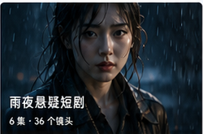
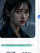
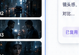
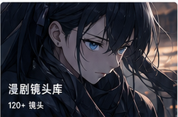

AI 视频 · 无限画布工作流
把 AI 视频创作，展开成一张可控画布
剧本、角色、场景、Prompt 与视频版本被组织成可追溯的创作资产， 团队能看见每一步生成依据。
Canvas-first
Agent co-pilot
角色一致性
灵感输入
雨夜便利店里的未来录像
- 拆剧本
- 建画布
- 出首版
Agent Co-pilot
自动把灵感拆成可执行工作流
拆解剧本结构
锁定角色一致性
生成分镜候选
检查缺失素材

第 03 场 · 天台对峙
角色一致性 92% · Prompt 已复用 12 次
下一步建议
补充反打镜头，并生成 3 个低饱和光影版本。
Product Preview
从灵感输入到视频版本，每一步都能被看见

林夏 · 女主 一致性 92%

夜雨、霓虹反射、电影级光感、35mm 镜头、低饱和对比...
已复用 12 次
Agent 正在整理创作链路
- 拆剧本
- 锁角色
- 生成分镜
- 导出版本
10min
首版片段
从灵感到可用的视频片段
7类
创作节点
覆盖剧本到成片的完整链路
4种
资产继承
角色 / 场景 / 风格 / Prompt 继承
剧本到视频全链路可视化编排，依赖关系一目了然。
自动拆解、补全 Prompt、检查缺失项，减少重复劳动。
每次生成保留参数与上下文，支持对比与回滚。
面向短剧、广告、漫剧团队，而不是一键玩具流。
Product Control
产品如何帮团队保持控制感
角色、场景、风格与 Prompt 被结构化管理，一致性在项目间延续。
每一步生成都有来源与参数记录，版本演化清晰可见，随时回溯。
自动拆解剧本、锁定角色、生成分镜与版本管理，让团队专注创意判断。
Use Cases
从创意到成片，团队都在用 Luminova
雨夜悬疑短剧
复杂角色与多场景连续叙事，风格统一，版本迭代高效。
悬疑短剧连续性新品广告预演
快速验证创意与镜头方案，支持多版本对比与客户评审。
广告产品分镜预演漫剧镜头库
沉淀可复用镜头资产库，提升产能，保障画风一致。
动画漫剧镜头库